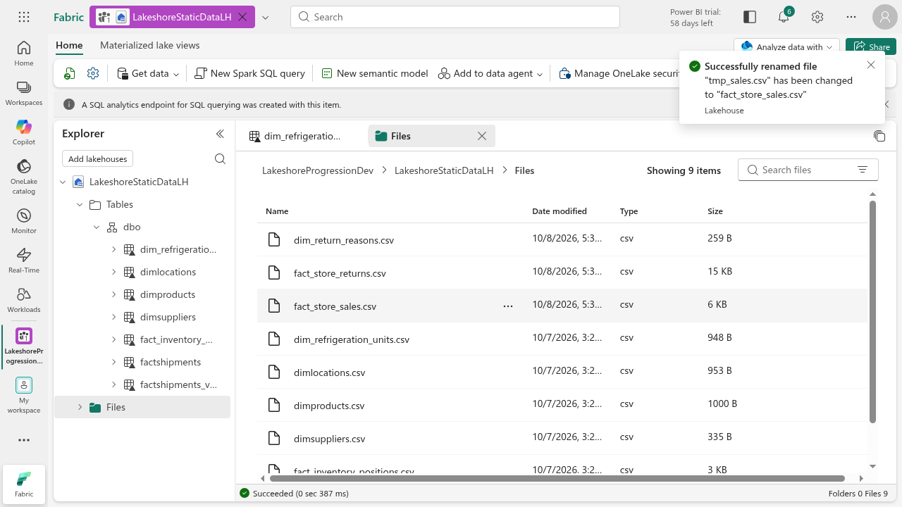
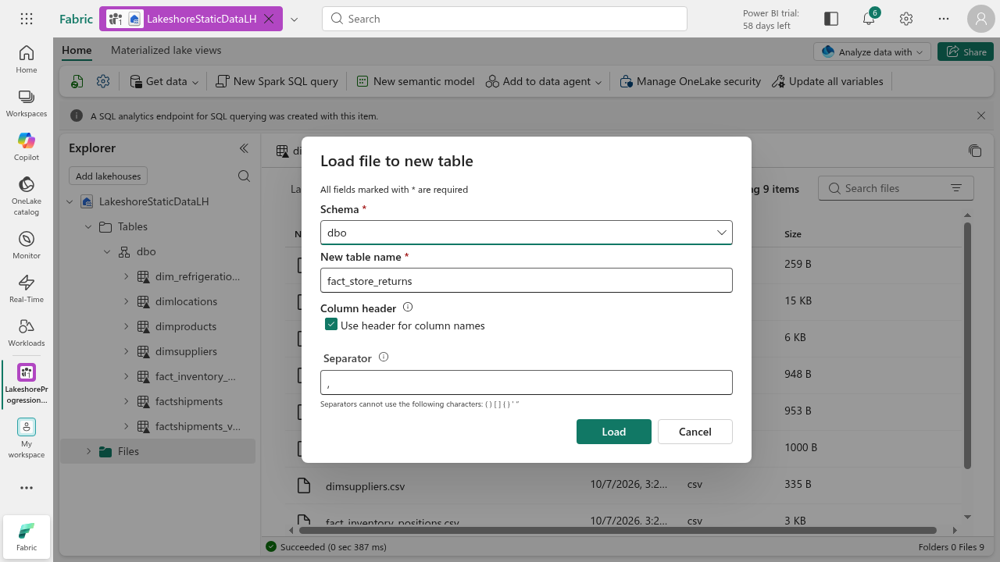
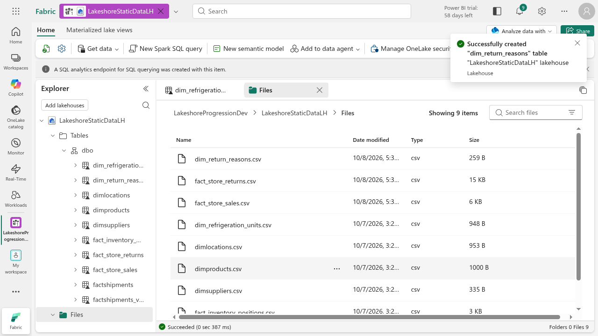
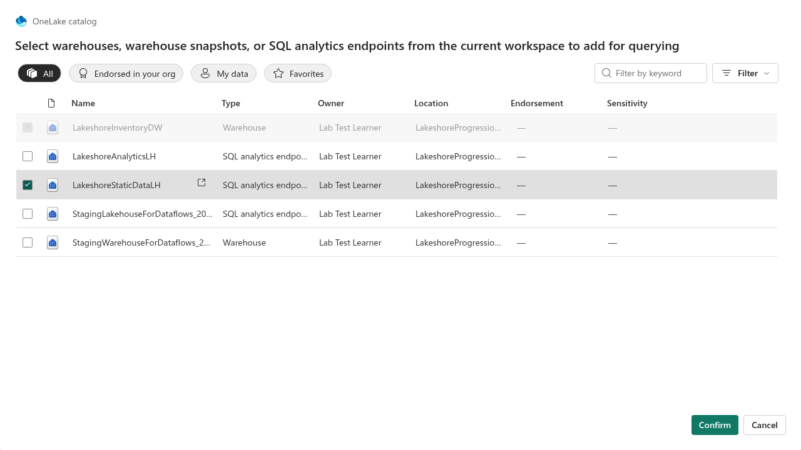
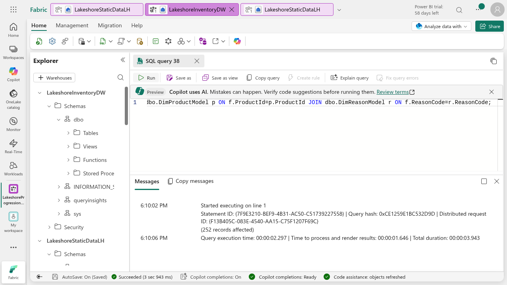
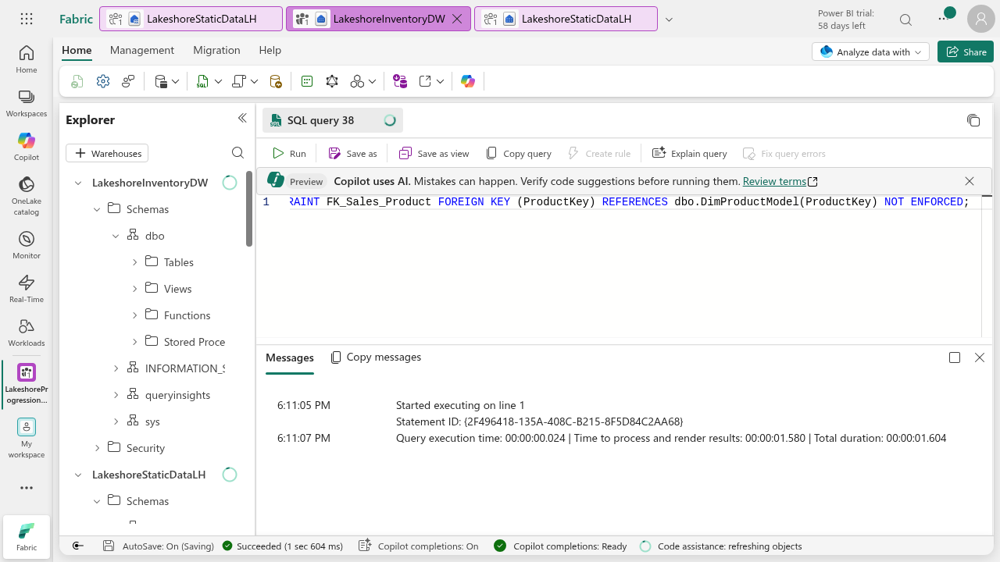
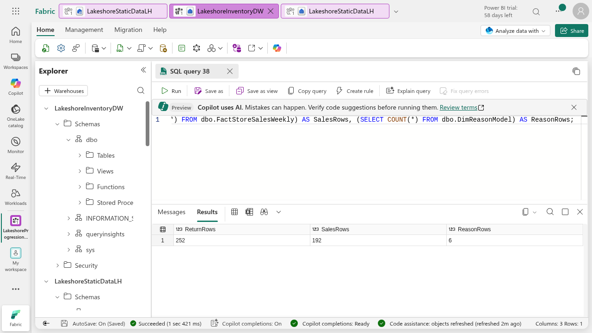
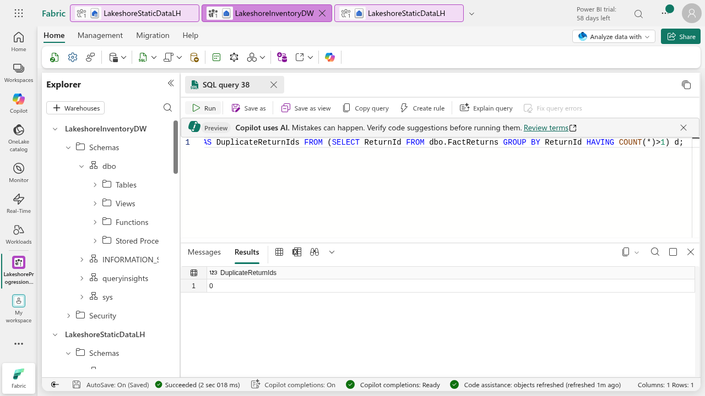
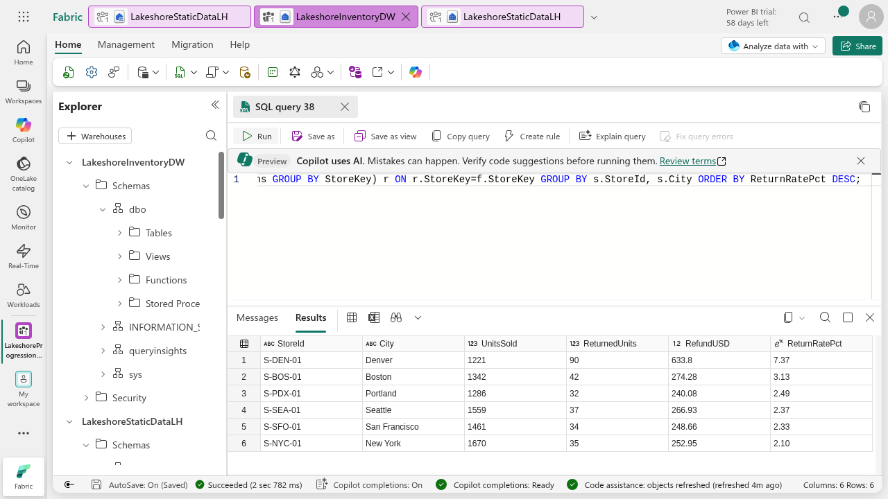

Task 1: Lakeshore returns data in OneLake
Assignment 1: MySQL · Assignment 2: OneLake · Assignment 3: Inventory · Assignment 4: Semantic lifecycle · Assignment 5: Ontology · Task 1: Returns data · Task 2: Returns in the model and ontology
Lakeshore's store managers say returns are rising, but nobody knows which stores are the problem. In this task you bring Lakeshore returns data into OneLake and model it next to the inventory star schema you built in Assignment 3. Task 2 then adds it to the semantic model and ontology and answers the question.
You need the workspace, LakeshoreStaticDataLH lakehouse and LakeshoreInventoryDW warehouse from Assignments 2 and 3. No MySQL is used here: the new files go straight into OneLake. Allow 60 minutes. The screenshots are from a real run; your names and times will differ slightly.
Download the Lakeshore static data files: fact_store_returns.csv (252 returns), fact_store_sales.csv (192 weekly sales rows), dim_return_reasons.csv (6 reasons) and the script lakeshore-returns-model.sql.
Part 1: Load the returns files into OneLake
- Open your workspace, then open the
LakeshoreStaticDataLHlakehouse. - In the Explorer, right-click Files and select Upload > Upload files. Choose the three CSV files above. Confirm all three appear in the Files list.

- Right-click
fact_store_returns.csvand select Load to Tables > New table. Keep the suggested namefact_store_returns, keep Use header for column names selected, and select Load. - Repeat for
fact_store_sales.csvanddim_return_reasons.csv. Load one file at a time and wait for each load to finish.


Wait before the next part. New lakehouse tables take one to two minutes to appear in the lakehouse SQL analytics endpoint. If a query in Part 2 says an object name is invalid, wait a minute and run it again.
Part 2: Connect the warehouse to the lakehouse
- Open
LakeshoreInventoryDW. In the Explorer select + Warehouses, choose theLakeshoreStaticDataLHSQL analytics endpoint and select Confirm. It now appears under the warehouse so you can query it by three-part name, for exampleLakeshoreStaticDataLH.dbo.fact_store_returns.

Part 3: Create the returns model tables
You follow the same pattern as Assignment 3: model tables get integer keys and look up StoreKey and ProductKey from DimStoreModel and DimProductModel. Open the script and run the statements one at a time in a New SQL query. Running them all at once makes the editor harder to debug.
- Create and fill
DimReasonModel(6 rows, key ReasonKey). - Create
FactReturnswith CREATE TABLE AS SELECT: join each return to the store, product and reason dimensions to get the three keys, and compute DateKey from ReturnDateTime. - Create
FactStoreSalesWeeklythe same way (store key, product key, week start, units sold).

Part 4: Add keys and relationships
- Run the ALTER TABLE statements in the script: a primary key on
DimReasonModel, and foreign keys fromFactReturnsto store, product and reason and fromFactStoreSalesWeeklyto store and product. As in Assignment 3 they are NOT ENFORCED, so they document intent; the checks in Part 5 prove the data.

Part 5: Validate before you trust it
- Run the row-count query. Expect 252 returns, 192 weekly sales rows and 6 reasons. A lower number means a join dropped rows because a store or product code did not match.
- Run the grain query: one row per ReturnId, so it must return 0 duplicates.


Part 6: Answer the first question
- Run the last query in the script. It divides units returned by units sold for each store.
- Expect Denver (S-DEN-01) first: 1,221 units sold, 90 returned, $633.80 refunded, a 7.37% return rate. The next store, Boston, is 3.13%; Portland, Seattle, San Francisco and New York are between 2.1% and 2.5%.

Compare a count of returns with a rate: a big store can have many returns and still be fine. The rate uses units sold from the new sales table, which is why that file is part of the task.
Part 7: Submit and continue
Submit the answer screenshot and the row-count screenshot. Keep the workspace: Task 2 adds these tables to your semantic model and ontology.